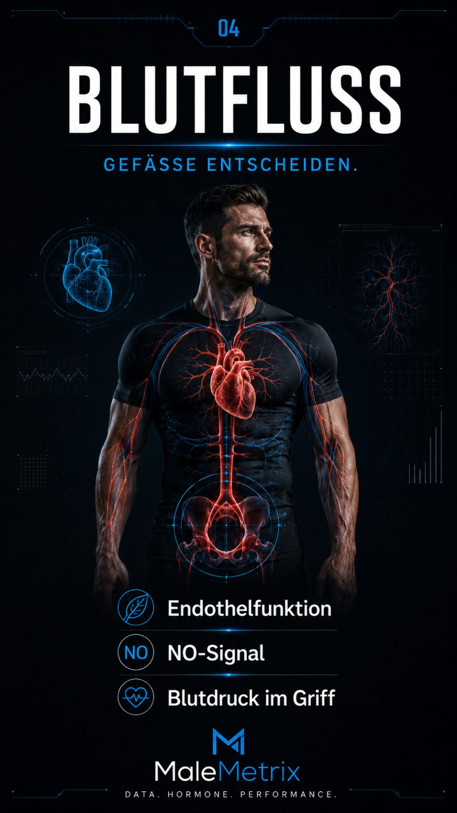
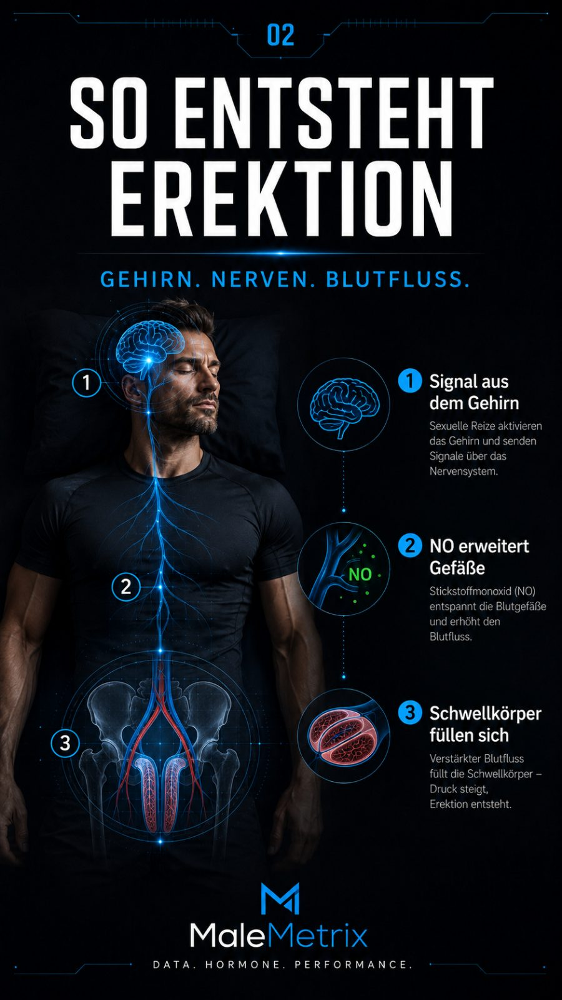
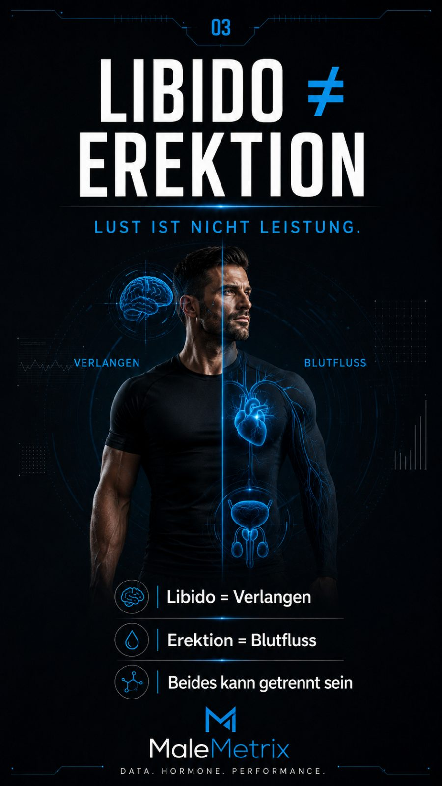
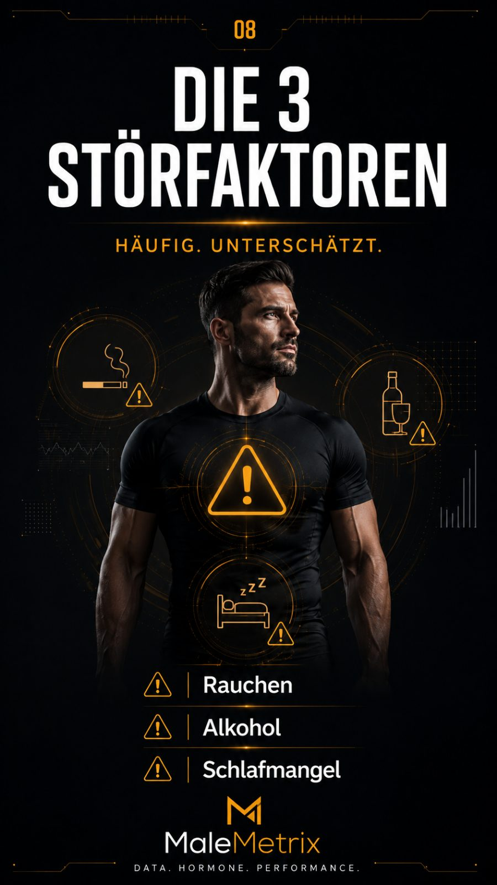
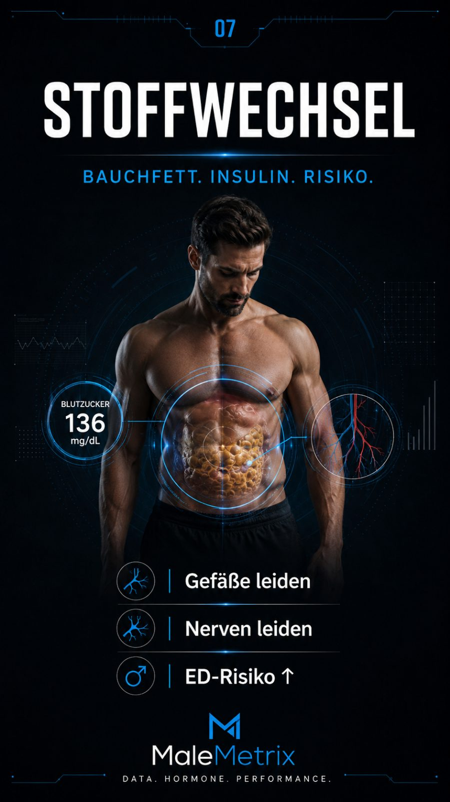
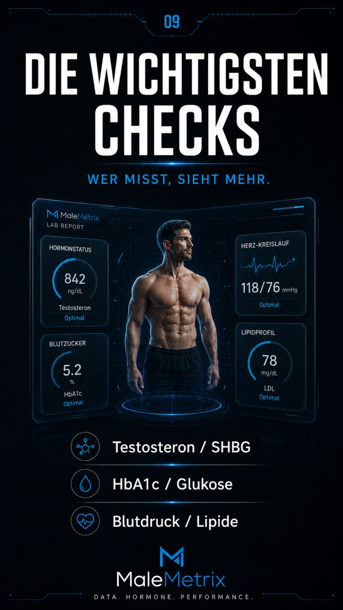
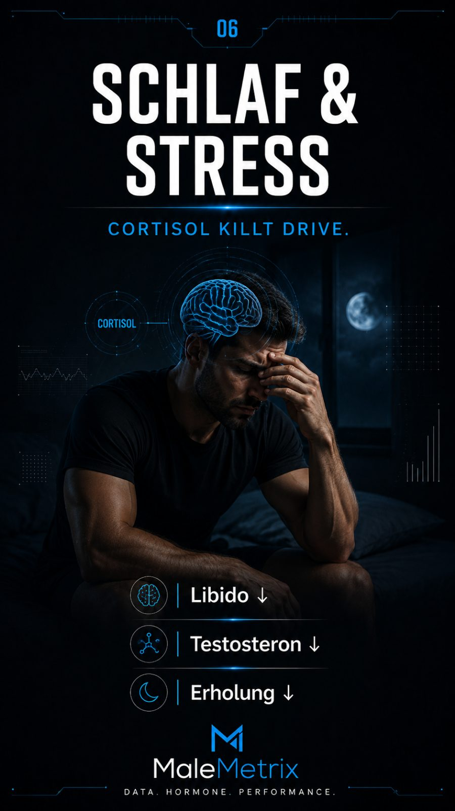
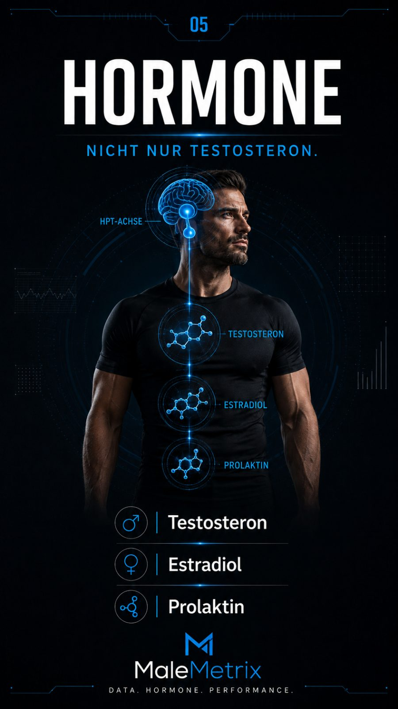

Sexuelle Gesundheit & Beckenboden
Der sachliche Guide für Männer: das Wissen über die Medikamente — Viagra, Cialis, Dapoxetin, PT-141, Testosteron und Schilddrüse — verständlich erklärt. Plus Beckenboden & Kegelübungen und der Weg zum richtigen Arzt.
Inhalt
- Kein Tabu: worum es geht
- Erektion ist ein Performance-Marker
- Die Physiologie: Stickstoffmonoxid, Endothel & Hydraulik
- Libido vs. Erektion — Kopf vs. Hydraulik
- Die häufigsten Probleme
- Körper oder Kopf?
- Die System-Checkliste
- Der Libido-Algorithmus & Dopamin
- Der Beckenboden — der unterschätzte Muskel
- Kegelübungen: Schritt für Schritt
- Dein Beckenboden-Trainingsplan
- Der Kopf: Versagensangst, Achtsamkeit & Pornokonsum
- Testosteron im Kontext — natürliche Hebel zuerst
- Die Medikamente: die verschreibungspflichtige Red Zone
- Dein 14-Tage-Fundament-Protokoll
- Wann zum Arzt oder Therapeuten
- Sicherheit & Arzt
1. Kein Tabu: worum es geht
Sexuelle Probleme gehören zu den häufigsten Gesundheitsthemen bei Männern — und zu den am seltensten ausgesprochenen. Schätzungen zufolge erlebt ein erheblicher Teil der Männer im Lauf des Lebens Phasen mit Erektions-, Ejakulations- oder Lustproblemen. Du bist damit also alles andere als allein.
Die gute Nachricht: Vieles ist beeinflussbar. Ein gut trainierter Beckenboden, gesunde Gefäße und ein ruhiger Kopf wirken zusammen. Dieses Ebook geht dabei bewusst mechanismus-first vor: Erst verstehst du, warum etwas im Körper passiert, dann was du konkret tust, und am Ende bekommst du ein konkretes Protokoll. Wer den Mechanismus versteht, rät nicht mehr herum, sondern zieht gezielt am richtigen Hebel.
2. Erektion ist ein Performance-Marker Level 1 · Pflicht
Die wichtigste Umdeutung dieses ganzen Ebooks: Eine Erektion ist kein reines Schlafzimmerthema — sie ist ein Leistungs- und Gesundheitsmarker. Sie zeigt in Echtzeit, wie gut deine Gefäße arbeiten, wie ausgeruht dein Nervensystem ist und wie hoch dein Stresslevel gerade steht. Wer das versteht, hört auf, sich zu schämen, und fängt an zu messen.

Der Grund liegt in der Anatomie: Die Arterien, die den Penis versorgen, sind mit einem Durchmesser von etwa ein bis zwei Millimetern deutlich enger als die Herzkranzgefäße (drei bis vier Millimeter) oder die Halsschlagadern. Wenn sich in den Gefäßen eine Funktionsstörung anbahnt — verhärtete, weniger reaktionsfähige Innenwände —, macht sich das in den engsten Leitungen zuerst bemerkbar. Deshalb kann eine anhaltende Erektionsstörung ein Frühwarnsignal sein, das anderen Symptomen wie Belastungsangina oder einem Herzinfarkt teils um Jahre vorausgeht.
Praktisch heißt das: Nimm eine wiederholte Erektionsstörung nicht als Kränkung, sondern als Datenpunkt. Sie ist ein Anlass, Blutdruck, Blutfette und Blutzucker prüfen zu lassen — nicht (nur), um wieder guten Sex zu haben, sondern um das Herz zu schützen. Genau das macht dieses Thema zu einer Gesundheitsfrage ersten Ranges.
3. Die Physiologie: Stickstoffmonoxid, Endothel & Hydraulik
Um zu verstehen, warum so viele Hebel überhaupt wirken, brauchst du das Bild dahinter. Eine Erektion ist im Kern ein hydraulischer Vorgang: Zwei Schwellkörper füllen sich mit Blut, der Rückfluss wird gedrosselt, der Druck steigt — fertig. Der ganze Prozess steht und fällt mit der Fähigkeit der Gefäße, sich zu weiten.
Der zentrale Schalter dafür heißt Stickstoffmonoxid (NO). Die Kette läuft so:
- Erregung (aus dem Kopf oder über Berührung) aktiviert Nerven im Beckenbereich.
- Diese Nerven und das Endothel — die hauchdünne Innenauskleidung der Blutgefäße — setzen NO frei.
- NO startet in der Gefäßwand die Bildung von cGMP, einem Botenstoff, der die glatte Muskulatur entspannt.
- Entspannte Muskulatur = weite Gefäße = Blut strömt in die Schwellkörper. Der Druck presst die abführenden Venen zu, das Blut bleibt drin: Erektion.
- Nach dem Orgasmus baut ein Enzym namens PDE-5 das cGMP ab, die Muskulatur spannt wieder an, das Blut fließt ab.

Jetzt wird vieles logisch. Ein gesundes Endothel ist die halbe Miete — und Endothel ist empfindlich: Bluthochdruck, hoher Blutzucker, Rauchen, hohe Blutfette und chronische Entzündung beschädigen es und drosseln die NO-Produktion. Deshalb ist Erektionsqualität so eng an die allgemeine Gefäßgesundheit gekoppelt. Und deshalb greifen die bekannten Medikamente genau hier an: PDE-5-Hemmer (Viagra, Cialis) blockieren den Abbau von cGMP — sie verlängern also das Signal, das die Gefäße offenhält. Sie erzeugen aber kein NO und keine Erregung. Ohne die Erregungs- und NO-Kette am Anfang passiert nichts.
4. Libido vs. Erektion — Kopf vs. Hydraulik
Der häufigste Denkfehler bei sexuellen Problemen ist, alles in einen Topf zu werfen. Dabei sind das zwei völlig verschiedene Systeme, die man getrennt betrachten muss:

| Libido (Verlangen) | Erektion (Funktion) | |
|---|---|---|
| Sitzt im | Gehirn — „Kopf" | Gefäßen & Nerven — „Hydraulik" |
| Getrieben von | Dopamin, Hormone, Kontext, Beziehung | NO, Endothel, Durchblutung, Nervenreflex |
| Gestört v. a. durch | Schlafmangel, Stress, Überforderung, Depression | Gefäßschäden, Blutdruck, Beckenboden, Nerven |
| Leitfrage | „Habe ich überhaupt Lust?" | „Kommt und bleibt die Erektion, wenn Lust da ist?" |
Diese Trennung ist der entscheidende Diagnose-Schritt für dich selbst. Wenig Lust, aber technisch funktionierende Erektionen (inkl. morgens) ist ein Kopf-/Hormon-/Kontext-Problem — da hilft kein Potenzmittel. Volles Verlangen, aber die Erektion kommt nicht oder bricht ab ist ein Hydraulik-Problem — da bringt „mehr Lust machen" nichts. Wer diese beiden verwechselt, zieht am falschen Hebel und wundert sich, dass nichts passiert.
5. Die häufigsten Probleme
Drei Themen tauchen am häufigsten auf. Sachlich eingeordnet:
| Thema | Was gemeint ist | Häufige Faktoren |
|---|---|---|
| Erektionsprobleme | Erektion lässt sich nicht zuverlässig erreichen oder halten | Gefäße, Blutdruck, Stress, Schlaf, Lebensstil |
| Vorzeitiger Samenerguss | Ejakulation früher als gewünscht, geringe Kontrolle | Beckenboden, Anspannung, Erregungssteuerung |
| Libidoverlust | spürbar nachlassendes sexuelles Verlangen | Schlaf, Stress, Hormone, Beziehung, Medikamente |
Diese Themen überschneiden sich oft: Wer wegen einer „Pannen-Nacht" Versagensangst entwickelt, baut Anspannung auf — und die verschlechtert sowohl Erektion als auch Kontrolle. Genau hier setzt eine Kombination aus Körpertraining und Kopfarbeit an.

6. Körper oder Kopf?
Fast jedes sexuelle Problem hat einen körperlichen und einen psychischen Anteil — die Frage ist nur, welcher überwiegt. Eine grobe Orientierung (keine Diagnose):
- Eher körperlich, wenn das Problem schleichend kam, in jeder Situation auftritt und auch morgendliche/spontane Erektionen seltener werden. Das gehört ärztlich abgeklärt.
- Eher psychisch, wenn es plötzlich begann, situationsabhängig ist (z. B. mit Partner ja/nein) und spontane Erektionen normal bleiben. Hier helfen Stressabbau und sexualtherapeutische Ansätze.
Der wichtigste diagnostische Marker, den du selbst beobachten kannst, sind die morgendlichen Erektionen. Sie entstehen im Schlaf weitgehend ohne psychische Erregung — reine Hydraulik im Ruhemodus. Treten sie regelmäßig auf, funktioniert das Gefäßsystem grundsätzlich; das Problem sitzt dann eher im Kopf oder in der Situation. Werden sie seltener oder schwächer, ist das ein Hinweis auf eine körperliche, oft gefäßbedingte Ursache — und ein klarer Anlass zur Abklärung.

7. Die System-Checkliste Level 1 · Pflicht
Weil Erektion vor allem Gefäßgesundheit ist, arbeitest du am wirksamsten von der Basis aus. Die folgende Checkliste geht die Systeme durch, die am stärksten in die Erektions- und Sexualfunktion einzahlen — mit Mechanismus, Prüfung und Hebel. Das ist die eigentliche „Behandlung" vor der Behandlung.

| System | Warum es zählt (Mechanismus) | Dein Hebel |
|---|---|---|
| Blutdruck & Blutfette | Hoher Druck und hohe Blutfette schädigen das Endothel, drosseln NO — die enge Penisarterie leidet zuerst | Werte kennen, ärztlich einstellen, Salz/Bewegung |
| Blutzucker | Dauerhaft hoher Zucker schädigt Gefäße und die kleinen Nerven, die die Erektion auslösen | Bauchfett runter, weniger schnelle Kohlenhydrate, Muskeln als Glukose-Senke |
| Schlafapnoe | Nächtliche Atemaussetzer senken Sauerstoff, treiben Stresshormone hoch und drücken Testosteron — starker, oft übersehener Libido- und Erektionskiller | Bei Schnarchen + Tagesmüdigkeit ärztlich abklären lassen |
| Bauchfett | Viszeralfett ist hormonell aktiv: Es wandelt Testosteron in Östrogen um und hält eine stille Entzündung am Laufen, die Gefäße schädigt | Kaloriendefizit (moderat!), Zone-2, Kraft |
| Stress / Kopf | Der Stressmodus (Sympathikus) ist der Gegenspieler der Erektion — er verengt Gefäße. Versagensangst schaltet ihn im falschen Moment ein | Atmung, Druck rausnehmen (Abschnitt 12) |
| Beckenboden | Hält Blut in der Erektion, steuert Ejakulation mit — schwach oder unkoordiniert = beides schlechter | Kegel richtig (Abschnitt 9–11) |
| Alkohol | Akut dämpft er das Nervensystem und die Erektion; chronisch senkt er Testosteron und stört den Schlaf | Menge ehrlich prüfen, Sex-Abende nüchtern halten |
| Ausdauer / Zone 2 | Trainiert direkt das Endothel und die NO-Produktion — „Gefäßtraining", das die Erektion messbar verbessert | 2–4× pro Woche lockeres Cardio (s. u.) |
Zone 2 ist der unterschätzte Star dieser Liste. Gemeint ist lockeres Ausdauertraining bei einer Intensität, bei der du dich noch in ganzen Sätzen unterhalten könntest — zügiges Gehen, lockeres Radfahren, ruhiges Joggen, 30–45 Minuten. Genau diese Belastung erhöht den Blutfluss über längere Zeit, was das Endothel reizt, mehr NO-produzierende Enzyme zu bilden und die kleinen Gefäße reaktionsfähiger zu machen. Was gut fürs Herz ist, ist im selben Mechanismus gut für die Erektion — das ist keine Metapher, sondern dieselbe Gefäßbiologie.
8. Der Libido-Algorithmus & Dopamin
Wenn das Verlangen fehlt (nicht die Funktion — siehe die Trennung in Abschnitt 4), greifen die meisten Männer zuerst zum Gedanken „mein Testosteron ist zu niedrig". Fast immer ist das der letzte Punkt, den man prüfen sollte, nicht der erste. Denn Libido ist zuallererst ein Zustand des Gehirns — und der lässt sich ordnen. Arbeite diese Reihenfolge von oben nach unten ab, bevor du an einen Blutwert denkst:

| # | Prüfen | Warum zuerst |
|---|---|---|
| 1 | Schlaf | Der größte Hebel überhaupt. Ein Großteil des Testosterons entsteht im Schlaf; wenige Nächte mit Schlafmangel senken es messbar und dämpfen das Verlangen direkt. |
| 2 | Stress | Chronischer Stress hält Cortisol hoch — der biologische Gegenspieler von Verlangen und Erektion. Im Überlebensmodus fährt der Körper Fortpflanzung herunter. |
| 3 | Zu hartes Defizit | Aggressives Abnehmen (Crash-Diät, zu wenig Kalorien) drosselt Sexualhormone und Libido. Der Körper spart am „Luxus" Fortpflanzung zuerst. |
| 4 | Alkohol | Regelmäßiger Konsum senkt Testosteron, stört den Schlaf und dämpft das Nervensystem — ein dreifacher Angriff auf die Lust. |
| 5 | Beziehung / Kontext | Verlangen ist kontextabhängig. Konflikt, Monotonie oder Frust nach außen als „Hormonproblem" zu deuten, führt in die Irre. |
| 6 | Übertraining | Zu viel Volumen ohne Erholung hält den Körper im Stressmodus und drückt die Libido — mehr Training ist hier kontraproduktiv. |
| 7 | Erst dann: Blutwerte | Wenn 1–6 sauber sind und das Verlangen trotzdem flach bleibt, ist eine ärztliche Abklärung sinnvoll — Testosteron (morgens, wiederholt), Schilddrüse (TSH), ggf. Prolaktin. |
Der Punkt: Sechs von sieben Ursachen liegen im Lebensstil und lassen sich ohne Rezept beheben. Der Fehler ist, bei Punkt 7 anzufangen und die Punkte 1–6 zu überspringen — dann behandelt man einen Symptomwert, während die eigentliche Ursache weiterläuft.
Ein Wort zu Dopamin, dem Botenstoff hinter Motivation und Verlangen: Libido ist zu einem großen Teil ein Dopamin-Zustand. Das System reagiert aber auf Kontrast. Wer sein Gehirn den ganzen Tag mit hochintensiven, mühelosen Reizen flutet — endloses Scrollen, ständige Benachrichtigungen, Dauer-Snacking, Pornografie —, hebt sein Grundrauschen an, und der vergleichsweise „langsame" Reiz echter Intimität wirkt dann matt. Weniger künstlicher Dauerreiz stellt die Empfindlichkeit wieder her. Das ist kein Moralthema, sondern Rezeptor-Biologie.
9. Der Beckenboden — der unterschätzte Muskel
Der Beckenboden ist eine Muskelplatte, die das Becken nach unten abschließt. Bei Männern ist er direkt an der Sexualfunktion beteiligt: Er hilft, Blut in der Erektion zu „halten", und steuert über die Beckenbodenmuskulatur die Ejakulation mit. Konkret drücken zwei Muskeln (der Ischiocavernosus und der Bulbospongiosus) bei Anspannung die abführenden Venen zu — sie sind sozusagen das Ventil, das den Blutdruck im Schwellkörper hält. Ein schwacher oder unkoordinierter Beckenboden lässt dieses Ventil leck werden: Die Erektion steht, hält aber nicht.
Das Schöne: Dieser Muskel lässt sich trainieren — wie jeder andere auch. Beckenbodentraining (Kegelübungen) gehört zu den am besten untersuchten nicht-medikamentösen Maßnahmen und wird in der Physiotherapie standardmäßig bei Erektions- und Ejakulationsproblemen eingesetzt. Es ist kostenlos, unauffällig und überall machbar.
10. Kegelübungen: Schritt für Schritt
Schritt 1 — den Muskel finden. Stell dir vor, du willst den Urinstrahl anhalten oder verhindern, Winde entweichen zu lassen. Genau die Muskeln, die sich dabei nach innen-oben anspannen, sind dein Beckenboden. Wichtig: Bauch, Po und Oberschenkel bleiben dabei locker, und du atmest normal weiter.
Schritt 2 — richtig anspannen, halten, vollständig lösen. Der ganze Zyklus hat drei Teile, und der dritte ist der wichtigste: anspannen — halten — vollständig lösen. Spanne den Beckenboden bewusst an, halte kurz, und lass dann bis zum Ende locker. Das komplette Loslassen ist genauso entscheidend wie das Anspannen — viele trainieren nur die Anspannung und verkrampfen dabei dauerhaft. Ein permanent zu hoher Grundtonus (ein „hypertoner" Beckenboden) kann sogar Ursache von Beschwerden und vorzeitigem Samenerguss sein. Ziel ist ein Muskel, der kräftig anspannen und vollständig entspannen kann. Zwei Varianten gehören ins Training:
- Halte-Wiederholungen: anspannen, 3–5 Sekunden halten, langsam und vollständig lösen, 3–5 Sekunden Pause.
- Schnellkraft: kurze, kräftige Anspannungen im Sekundentakt — jeweils mit sauberem Loslassen — trainiert die schnelle Reaktion (wichtig für Ejakulationskontrolle).
Schritt 3 — sauber atmen. Niemals die Luft anhalten oder pressen. Idealerweise beim Anspannen ausatmen, beim Lösen einatmen. Qualität schlägt Menge: lieber wenige saubere Wiederholungen mit echtem Loslassen als viele verkrampfte.
11. Dein Beckenboden-Trainingsplan
Wie bei jedem Muskel zählt Regelmäßigkeit über Wochen — nicht Intensität an einem Tag. Ein realistischer Einstieg:
| Phase | Übung | Umfang |
|---|---|---|
| Woche 1–2 | Halte-Wdh. (3 Sek. halten, voll lösen) | 2× täglich 8–10 Wdh. |
| Woche 3–4 | Halten (5 Sek.) + Schnellkraft | 2–3× täglich, je 10 Wdh. |
| ab Woche 5 | beides, auch im Stehen/Sitzen | 3× täglich, 10–15 Wdh. |
12. Der Kopf: Versagensangst, Achtsamkeit & Pornokonsum
Sex findet zu einem großen Teil im Kopf statt. Versagensangst ist die häufigste psychische Falle — und sie hat einen handfesten Mechanismus: Angst aktiviert den Sympathikus, den Stress-Ast des Nervensystems. Der aber ist der direkte Gegenspieler der Erektion, denn er verengt die Gefäße, statt sie zu weiten. Eine einzelne Panne führt zu Sorge, die Sorge schaltet in der nächsten Situation den Stressmodus ein, und der sabotiert genau die Durchblutung, die es bräuchte — ein sich selbst erfüllender Teufelskreis. Was hilft, ihn zu durchbrechen:
- Druck rausnehmen: Sex muss nicht in „Leistung" enden. Phasen ohne Ziel (reine Nähe, kein „es muss klappen") senken den Erwartungsdruck spürbar — und damit den Sympathikus.
- Achtsamkeit statt Beobachtung: Wer sich beim Sex selbst kontrolliert beobachtet („Spectatoring"), ist im Kopf statt im Körper. Fokus auf Berührung und Empfindung holt das Nervensystem aus dem Alarmmodus.
- Atmung als Notbremse: Langsames Ausatmen (Ausatmung länger als Einatmung) aktiviert den Parasympathikus — den „Ruhe-Ast", unter dem eine Erektion überhaupt erst möglich ist.
- Reden: Offen mit dem Partner zu sprechen, nimmt enormen Druck. Schweigen verschlimmert fast immer.
- Sensate Focus: ein bekanntes sexualtherapeutisches Übungsprinzip — schrittweise, druckfreie Berührungsübungen, die den Fokus weg von „Funktionieren" hin zu Empfinden lenken.
Zum Pornokonsum — vorsichtig und ehrlich. Hier ist Nüchternheit gefragt: Belastbare Daten sind begrenzt, und Panikmache hilft niemandem. Plausibel und in der Praxis oft berichtet ist aber ein Muster: Sehr häufiger, intensiver Konsum kann das Belohnungssystem an einen sehr starken, neuartigen und mühelosen Reiz gewöhnen — echte Intimität mit einem realen Partner ist dagegen langsamer und weniger „extrem". Für manche verschiebt das die Erregungsschwelle. Der ehrliche Selbsttest ist einfach: Funktioniert es allein problemlos, mit dem Partner aber nicht? Das deutet eher auf ein Kopf-/Konditionierungsthema als auf ein Gefäßproblem. Eine Konsumpause ist ein harmloses, kostenloses Experiment — kein Dogma, aber einen ehrlichen Versuch wert.
13. Testosteron im Kontext — natürliche Hebel zuerst
Kaum ein Wert wird so überschätzt wie Testosteron. Wichtig zur Einordnung: Ein niedriges Verlangen ist deutlich häufiger die Folge von Schlafmangel, Stress, Alkohol und Bauchfett als eines echten Hormonmangels — und Testosteron ist außerdem kein Erektionsmittel: Es beeinflusst vor allem das Verlangen, nicht die Hydraulik. Eine rein durchblutungsbedingte Erektionsstörung repariert es nicht.
Deshalb gilt die Regel: Natürliche Hebel zuerst. Viele der Faktoren, die einen niedrigen Testosteronwert verursachen, sind dieselben, die du ohnehin für Gefäße und Libido angehst:

- Schlaf — ein Großteil der Produktion läuft nachts; chronischer Mangel senkt den Wert messbar.
- Körperfett runter — Viszeralfett wandelt Testosteron aktiv in Östrogen um.
- Krafttraining — setzt einen akuten hormonellen Reiz und verbessert die Insulinlage.
- Alkohol runter — regelmäßiger Konsum drückt den Wert direkt.
- Vitamin-D-Status und Schilddrüse (TSH) prüfen — beide können hineinspielen.
Ein einzelner Laborwert ist keine Diagnose. Testosteron schwankt tageszeitlich stark und gehört morgens und wiederholt gemessen, zusammen mit passenden Symptomen. Erst wenn die natürlichen Hebel sauber gezogen sind und Wert und Symptome zusammenpassen, ist eine ärztliche Testosteronersatztherapie (TRT) überhaupt das Thema — verschreibungspflichtig, meist dauerhaft, mit Kontrollen und möglichen Folgen für die Fruchtbarkeit.
14. Die Medikamente — die verschreibungspflichtige Red Zone Level 4 · Red Zone
Wenn Training, Gefäßarbeit und Lebensstil nicht ausreichen, gibt es wirksame Medikamente. Der entscheidende Punkt: Jedes Mittel setzt an einer anderen Stelle der Kette an — Durchblutung, Ejakulationsreflex, Verlangen oder Hormonhaushalt. Welches überhaupt sinnvoll ist, hängt von der Ursache ab. Genau deshalb steht die Diagnose vor dem Medikament — und deshalb ist dieser ganze Abschnitt eine Red Zone: einordnend, nicht anleitend.
| Wirkstoff | Setzt an | Typisch bei |
|---|---|---|
| Sildenafil / Tadalafil | Durchblutung im Penis (PDE-5) | Erektionsstörung |
| Dapoxetin | Ejakulationsreflex (Nervensystem) | vorzeitiger Samenerguss |
| PT-141 | Gehirn / sexuelles Verlangen | Luststörung (experimentell) |
| Testosteron | Hormonhaushalt | nachgewiesener Mangel |
| Schilddrüsenhormone | Stoffwechsel / Hormone | Schilddrüsen-Fehlfunktion |
14.1 PDE-5-Hemmer: Viagra (Sildenafil) & Cialis (Tadalafil)
Die bekanntesten Mittel gegen Erektionsstörungen — und jetzt verstehst du nach Abschnitt 3 auch genau, warum sie wirken. Sie hemmen das Enzym PDE-5, das normalerweise den Botenstoff cGMP abbaut. Wird PDE-5 blockiert, bleibt mehr cGMP erhalten, die glatte Muskulatur in den Penisgefäßen bleibt länger entspannt, mehr Blut fließt ein — die Erektion wird leichter und stabiler. Ganz wichtig: Sie wirken nur zusammen mit sexueller Erregung und einer intakten NO-Kette. Sie liefern kein NO und kein Verlangen — es sind keine „Anschalter" und kein Aphrodisiakum.
| Viagra (Sildenafil) | Cialis (Tadalafil) | |
|---|---|---|
| Wirkdauer | kürzer (einige Stunden) | deutlich länger (bis ~1,5 Tage) |
| Besonderheit | empfindlich gegenüber fettem Essen | auch als niedrige Dauereinnahme möglich |
| Typische Nebenwirkungen | Kopfschmerz, Gesichtsröte, Sehstörung (Blaustich) | Kopfschmerz, Gesichtsröte, Rücken-/Muskelschmerz |
Beide teilen sich häufige, meist milde Nebenwirkungen: Kopfschmerzen, gerötetes Gesicht, verstopfte Nase, Sodbrennen. Tadalafil („Cialis") wird wegen seiner langen Wirkung oft „Wochenend-Pille" genannt.
14.2 Dapoxetin — gegen vorzeitigen Samenerguss
Dapoxetin ist ein Wirkstoff aus der Familie der SSRI, der gezielt für den vorzeitigen Samenerguss entwickelt wurde. Er wirkt kurz und wird bei Bedarf vor dem Sex eingenommen. Über das Nervensystem verzögert er den Ejakulationsreflex und verbessert so die Kontrolle. In Deutschland und vielen Ländern ist er zugelassen (in den USA nicht); andere Antidepressiva werden manchmal ärztlich „off-label" mit ähnlichem Effekt eingesetzt.
Typische Nebenwirkungen sind Übelkeit, Schwindel und Kopfschmerzen. Dapoxetin darf nicht mit bestimmten anderen Antidepressiva kombiniert werden — ein weiterer Grund für die ärztliche Begleitung. In der Praxis wird das Medikament oft mit Beckenbodentraining und Verhaltenstechniken kombiniert, statt sich allein darauf zu verlassen.
14.3 PT-141 (Bremelanotid) — auf das Verlangen
PT-141 ist ein Sonderfall: Es wirkt nicht auf die Durchblutung, sondern im Gehirn (über sogenannte Melanocortin-Rezeptoren) und zielt auf das sexuelle Verlangen. Als Präparat „Vyleesi" ist es für Frauen mit einer Luststörung zugelassen. Für Männer ist es nicht regulär zugelassen — der Einsatz ist experimentell.
14.4 Testosteron (TRT) — nur bei echtem Mangel
Ist die Ursache ein nachgewiesener Testosteronmangel (niedriger Blutwert plus passende Symptome wie Libidoverlust), kann eine ärztliche Testosteronersatztherapie Verlangen und Energie verbessern. Aber: TRT repariert keine rein durchblutungsbedingte Erektionsstörung und ist kein Lifestyle-Booster für Männer mit normalen Werten. Sie ist verschreibungspflichtig, meist dauerhaft, kann die Fruchtbarkeit einschränken und erfordert regelmäßige Kontrollen. Die natürlichen Hebel aus Abschnitt 13 kommen immer zuerst.
14.5 Schilddrüse — die übersehene Ursache
Ein oft vergessener Faktor: Die Schilddrüse. Sowohl eine Unterfunktion als auch eine Überfunktion können Libido, Erektion und Ejakulation stören. Das Gute daran: Ein einfacher Bluttest (vor allem der TSH-Wert) deckt es auf, und eine Behandlung — etwa Schilddrüsenhormone bei einer Unterfunktion — kann die Sexualfunktion wieder normalisieren.
Deshalb gehört die Schilddrüse in jede gründliche Abklärung sexueller Probleme. Sie ist eine häufig übersehene, aber gut behandelbare Ursache — bevor man über Potenzmittel nachdenkt, lohnt sich dieser Blick.
14.6 Die wichtigste Regel
So unterschiedlich diese Mittel sind, eines haben sie gemeinsam: Sie gehören in ärztliche Hände. Das richtige Medikament hängt komplett von der Ursache ab — ein Erektionsmittel hilft nicht gegen Lustlosigkeit, Testosteron nicht gegen ein Durchblutungsproblem, und keines davon ersetzt die Abklärung einer möglichen körperlichen Erkrankung. Ein Potenzmittel, das „funktioniert", verdeckt im schlimmsten Fall genau das Gefäßwarnsignal aus Abschnitt 2, das ans Herz gehört.
15. Dein 14-Tage-Fundament-Protokoll Level 1 · Pflicht
Kein Medikament, kein Supplement — nur die Basis, die auf Gefäße, Nervensystem und Libido gleichzeitig einzahlt. Zwei Wochen sind lang genug, um erste Veränderungen im Kopf und im Schlaf zu spüren, und kurz genug, um dranzubleiben. Danach entscheidest du mit Daten statt mit Gefühl, was dir noch fehlt.
| Baustein | Konkret | Wirkt auf |
|---|---|---|
| Schlaf-Anker | Feste Bett- und Aufstehzeit, Ziel 7–8 h; letztes Glas Alkohol & letzter Koffein früh genug | Testosteron, Libido, Erholung |
| Zone-2-Cardio | 4×/Woche 30–40 Min lockeres Cardio (Gehen, Rad, ruhiges Joggen) — „Gefäßtraining" | Endothel, NO, Erektion |
| Beckenboden | 2×/Tag der Kegel-Zyklus aus Abschnitt 10–11: anspannen — halten — vollständig lösen | Erektion halten, Ejakulationskontrolle |
| Alkohol-Fenster | Werktags null, Sex-Abende bewusst nüchtern | Nervensystem, Testosteron, Schlaf |
| Reiz-Diät | Handy aus dem Schlafzimmer; ehrliche Pause vom Pornokonsum als Test | Dopamin-Empfindlichkeit, Libido |
| Atem-Reset | Vor dem Schlafen & vor Intimität 2–3 Min langsames Ausatmen | Parasympathikus, Versagensangst |
| Zahlen kennen | Einmalig Blutdruck messen (lassen); bei Auffälligkeiten Termin machen | Gefäß-/Herzschutz |
16. Wann zum Arzt oder Therapeuten
Selbsthilfe ist gut — hat aber klare Grenzen. Bitte ärztlich abklären lassen, wenn:
- Erektionsprobleme wiederholt auftreten oder schleichend zunehmen (Gefäß-/Herz-Check!).
- die morgendlichen Erektionen deutlich seltener oder schwächer werden.
- Schmerzen, Verkrümmungen, Blut oder andere körperliche Auffälligkeiten dazukommen.
- ein Problem plötzlich auftritt, besonders nach neuen Medikamenten.
- die Belastung groß ist oder die Beziehung darunter leidet — dann ist ein Sexualtherapeut der richtige Ansprechpartner.
Erste Anlaufstelle ist der Hausarzt oder Urologe; für die psychische Seite ein qualifizierter Sexual- oder Psychotherapeut. Beides ist normal und sinnvoll — und oft der schnellste Weg zur Lösung. Denk an Abschnitt 2: Der Arztbesuch wegen einer Erektionsstörung kann im besten Fall ein Gefäßproblem aufdecken, bevor es das Herz trifft. Das ist keine Sex-Sprechstunde, das ist Vorsorge.
17. Sicherheit & Arzt
Beckenbodentraining und ein gesunder Lebensstil sind für die meisten Männer sicher und wirkungsvoll. Sie ersetzen aber keine Diagnose: Anhaltende Probleme können eine behandelbare körperliche Ursache haben, die du nicht „wegtrainieren" solltest. Im Zweifel gilt immer: erst abklären, dann handeln.
Nächster Schritt: Weil Erektion vor allem Durchblutung ist, zahlt deine allgemeine Fitness direkt aufs Sexualleben ein. Finde mit dem kostenlosen MaleMetrix Score heraus, welcher Hebel — Schlaf, Training, Gewicht — dich gerade am meisten bremst. Hintergrund zu Hormonen liefert dir das Testosteron-Ebook.
Im 1:1-Coaching bekommst du Training, Ernährung, Schlaf und Blutwerte-Struktur persönlich auf dich zugeschnitten — wöchentlich angepasst, mit direktem Draht. Das Erstgespräch ist kostenlos und unverbindlich.
Kostenloses Analysegespräch buchen →© MaleMetrix. Allgemeine Information und Aufklärung, kein Ersatz für ärztliche oder therapeutische Beratung und keine Diagnose- oder Behandlungsempfehlung.